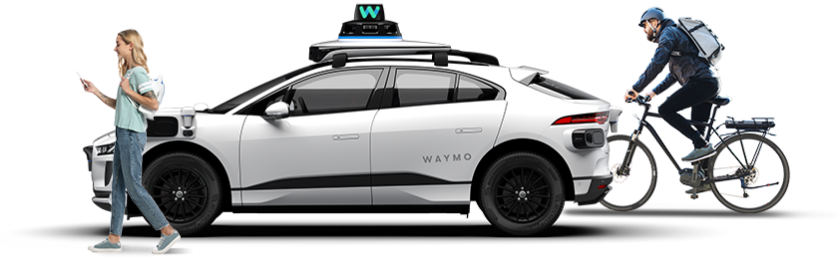
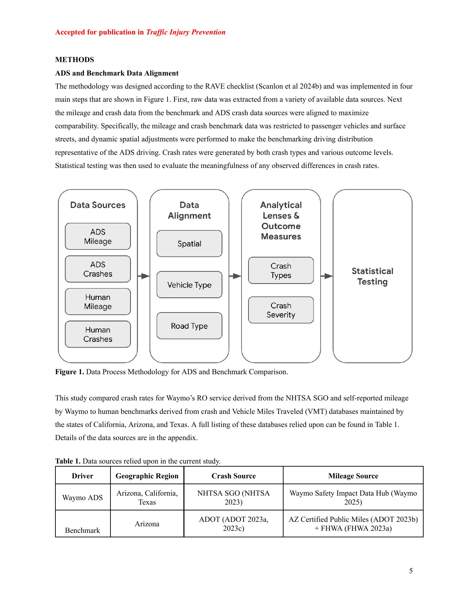
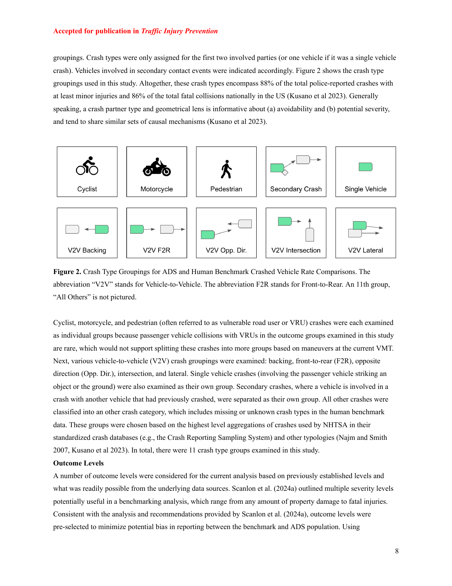
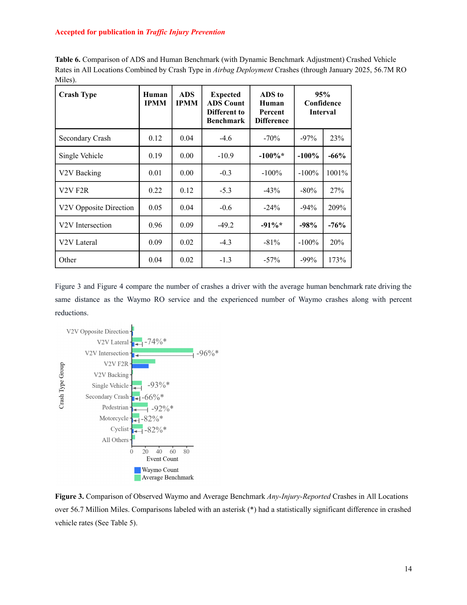
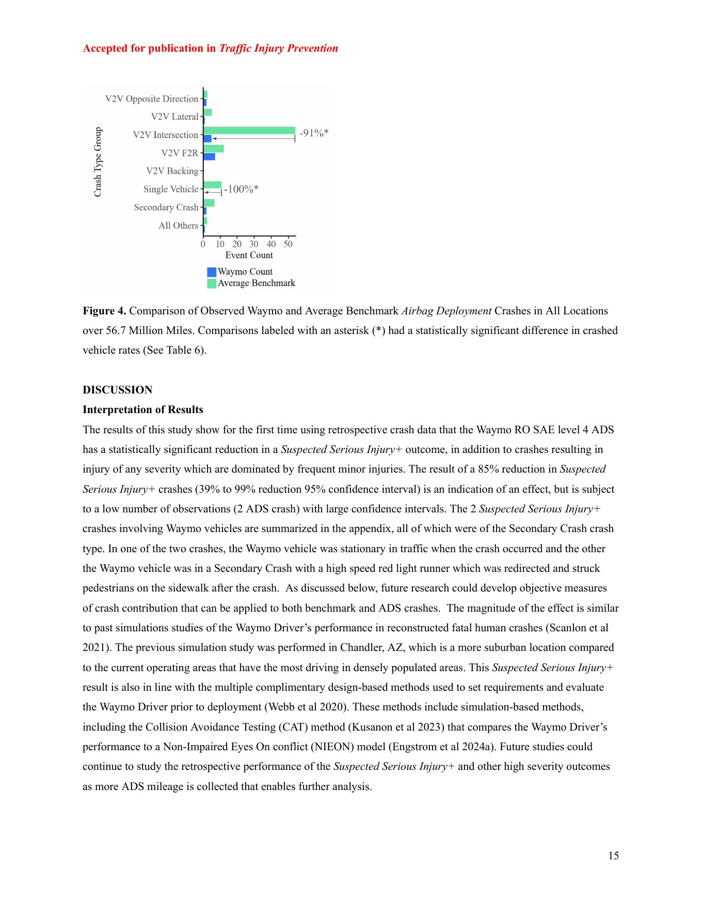

| 項目 | 内容 |
|---|---|
| タイトル | Comparison of Waymo Rider-Only Crash Rates by Crash Type to Human Benchmarks at 56.7 Million Miles |
| 著者 | Kristofer D. Kusano, John M. Scanlon, Yin-Hsiu Chen, Timothy L. McMurry, Tilia Gode, Trent Victor |
| 所属 | Waymo LLC |
| 掲載誌 | Traffic Injury Prevention, Volume 26, Issue sup1, S8-S20 |
| DOI | 10.1080/15389588.2025.2499887 |
| ライセンス | CC BY-NC-ND 4.0 |
SAE Level 4のAutomated Driving System（ADS）は、WaymoのRider-Only（RO）配車サービスのように、ステアリングホイールの背後にドライバーがいない形で公道に展開されている。本研究の目的は、Waymo ROの衝突率を人間ドライバーのベンチマークと比較し、さらに衝突タイプ別に分解して、後ろ向きの安全性評価を行うことである。
人間の衝突データベースに由来する、広く使われる衝突類型から11の衝突タイプグループを定義した。人間ベンチマークは、州のVehicle Miles Traveled（VMT）データと警察報告衝突データから構築した。ベンチマークは、Waymo Driverが運行した車両タイプ、道路タイプ、場所と一致するよう調整した。Waymoの衝突はNHTSA Standing General Order（SGO）から抽出し、RO走行距離は同社の公開Webサイトから得た。Any-Injury-Reported、Airbag Deployment、Suspected Serious Injury+の各衝突アウトカムを調べた。これらは、現在の走行距離で統計検定が可能で、既存研究でも安全関連ベンチマークとして使われているためである。
2025年1月末までの5,670万ROマイルを分析した結果、全衝突を対象にした衝突車両率は、Any-Injury-Reported、Airbag Deployment、Suspected Serious Injury+の各アウトカムで、人間ベンチマークより統計的に有意に低かった。衝突タイプ別では、Vehicle-to-Vehicle（V2V）Intersection衝突が最大の総衝突削減を示し、Any-Injury-Reportedでは96%削減（信頼区間87-99%）、Airbag Deploymentでは91%削減（信頼区間76-98%）だった。Cyclist、Motorcycle、Pedestrian、Secondary Crash、Single Vehicle衝突も、Any-Injury-Reportedアウトカムで統計的に有意に減少した。11の衝突タイプグループのいずれにも、統計的に有意な不利益は見つからなかった。
本研究は、Rider-Only ADSについて、Airbag DeploymentやSuspected Serious Injury+のようなより重大な衝突アウトカムに統計的結論を出し、かつ衝突タイプ別に衝突率を分析した、初の後ろ向き安全性評価である。本研究で用いた衝突タイプ別の分解は、現在展開中のADSシステムが達成している安全影響の方向と大きさを理解するための独自の洞察を提供する。ADS技術の安全影響を客観的に評価しようとするステークホルダー、規制当局、他のADS企業は、本研究を考慮すべきである。
後ろ向き安全性評価、または安全影響・安全便益研究は、車両安全技術の実運用下での衝突性能を何らかのベンチマークと比較する。このアプローチは、報告衝突データと曝露量データを用いることが多く、シートベルト、エアバッグ、ABS、横滑り防止装置、前方衝突防止、車線逸脱防止などの安全システム評価に広く使われてきた。
過去に評価されたシステムの多くは、特定タイプの衝突の防止または軽減に最も効果的である。たとえばAutomatic Emergency Braking（AEB）やForward Collision Warning（FCW）のような前方衝突防止システムは、主にfront-to-rear、すなわち追突タイプの衝突で効果を発揮する。そのため、多くの研究は対象衝突モードに対する低減効果を示す。衝突タイプグループ、またはコンフリクト類型を使って衝突母集団を細分化することは、交通安全分析の基本的手法である。
SAE Level 3から5として定義されるADSは、ようやく後ろ向き安全性評価が可能な数で公道展開され始めている。過去のADS安全影響研究の多くは、California DMVやNHTSA SGOに報告された初期試験データを使っていた。しかしこのデータの多くは、必要に応じて人間が介入できる安全ドライバー付きのLevel 4 ADSであり、ADSそのものの性能と人間テストドライバーの性能を切り分けることが難しい。
現在のLevel 4 ADS、特にフリート所有の配車車両として使われるシステムで最も関連性が高いのは、人間が運転席にいないRider-Only構成での性能である。Waymo ROの走行距離が増えたことで、重大度の高いアウトカムや衝突タイプ別の分析に対しても、統計的比較が可能になった。
本研究は、San Francisco、Phoenix、Los Angeles、Austinの表面道路で運行されたWaymo Level 4 ADSのRO構成について、5,670万ROマイルの後ろ向き安全影響分析を行った。研究課題は2つである。第一に、Any-Injury-Reported、Airbag Deployment、Suspected Serious Injury+の各アウトカムにおいて、Waymoの全体衝突性能は整合された人間ベンチマークに対してどうか。第二に、Any-Injury-ReportedとAirbag Deploymentについて、衝突タイプ別に見たWaymoの衝突率は人間ベンチマークに対してどうか。
方法論はRAVE checklistに従って設計され、図1に示す4つの主要ステップで実装された。まず、利用可能な複数のデータソースから生データを抽出した。次に、ベンチマークとADSの衝突データソースから、走行距離データと衝突データの比較可能性を最大化するよう整合した。具体的には、ベンチマークの走行距離と衝突データを乗用車と表面道路に限定し、ADS走行を代表するよう、空間的な動的調整を行った。その後、衝突タイプとアウトカムレベルごとの衝突率を生成し、最後に統計検定で観測差の意味を評価した。

Waymo ROサービスの衝突率は、NHTSA SGOとWaymoが自己報告する走行距離から算出した。人間ベンチマークは、California、Arizona、Texas各州が保持する衝突データとVMTデータから作成した。比較可能性を高めるため、車両タイプ、道路タイプ、空間的走行分布を調整した。
Waymo ROの運行は、Chrysler PacificaおよびJaguar I-Paceプラットフォームで行われ、いずれも乗用車に分類される。本研究では、Waymo ROの運行が主に表面道路で行われているため、表面道路上の走行距離と衝突だけを扱った。さらに、走行距離は「in-transport」、すなわち駐車中や私有地上の作業車両ではない状態でのみ蓄積されるため、人間データ側も同じ概念で整合した。
ベンチマークデータは、Austinを構成するTexas州Travis、Hays、Williamson各郡、California州Los Angeles郡、Arizona州Maricopa郡、California州San Francisco郡という4つの地理領域として扱った。WaymoのODDは時間とともに変化しており、郡全体を必ずしも含まない。またWaymoは配車フリートとして、ユーザー需要に応じた独自の走行パターンを持つ。
そこで、Chen et al.（2024）の動的ベンチマーク手法を使い、人間ベンチマークデータをADSの走行分布に合わせて再重み付けした。つまり、人間運転群がWaymo Driverと同じ空間分布で走行したと仮定した場合の衝突率をモデル化する。具体的には、Waymoと人間の走行距離をlevel-13 S2セルに離散化し、各セル内の走行割合でベンチマークを再重み付けする。Waymo Driverが走行していない領域は、実質的にベンチマークから除外される。
本研究の貢献の一つは、個別の衝突タイプにおける衝突率を比較した点である。衝突タイプを細かくしすぎるとADS性能を具体的に理解できる一方で、統計的検出力が不足する。逆に粗すぎると検出力は上がるが、どの衝突で性能差が出ているか分かりにくい。本研究では、衝突相手タイプと幾何構成という2つの次元から衝突タイプを導いた。

本研究では、Cyclist、Motorcycle、Pedestrian、V2V Backing、V2V Front-to-Rear、V2V Opposite Direction、V2V Intersection、V2V Lateral、Single Vehicle、Secondary Crash、All Othersの11グループを扱った。Cyclist、Motorcycle、PedestrianはVulnerable Road User（VRU）衝突として重要であり、現在のVMTではさらに細かい操縦別分解を行うには希少すぎるため、個別グループとして扱った。
本研究では、交通安全研究の伝統的な焦点である重傷・死亡事故防止に沿って、Any-Injury-Reported、Airbag Deployment、Suspected Serious Injury+を調べた。これらは、人間データとADSデータの両方で利用可能で、現時点のADS走行距離で統計的に意味ある結論を出せる、最も傷害関連性の高いアウトカムである。
SGO衝突は、ADS車両がin-transportであり、かつWaymo ADS車両が衝突に関与したものに限定した。Suspected Serious Injury+は、関与者の誰かが警察報告上「Killed」または「Incapacitating」の傷害を負った衝突である。研究期間中、Waymo車両が関与したSuspected Serious Injury+衝突は2件であり、どちらもSecondary Crash、すなわちWaymoが衝突シーケンスの最初の事象に関与していない衝突だった。
ADSとベンチマークの衝突率の統計比較には、2つのPoisson平均発生率比に対する95%信頼区間を推定するClopper-Pearson限界を用いた。これはKusano et al.（2024）でも採用された方法である。
ADSと人間ベンチマークデータは、衝突率に影響する要因を考慮するため、同じ場所、同じ車両タイプ、同じ道路タイプから抽出された。空間的走行ミックスに対する動的ベンチマーク調整により、ベンチマークとADS走行母集団はさらに整合された。Waymo ROの走行距離は、Phoenix 3,115.9万マイル、San Francisco 1,826.0万マイル、Los Angeles 644.8万マイル、Austin 83.4万マイルで、合計5,670.0万マイルだった。
研究期間中のWaymo ROイベント数は、Any-Injury-Reportedが48件、Airbag Deploymentが18件、Suspected Serious Injury+が2件だった。
Waymo ROサービスは、Phoenix、San Francisco、および全地域合算で、Any-Injury-ReportedとAirbag Deploymentのアウトカムを統計的に有意に低減した。Suspected Serious Injury+についても、全地域合算で85%削減（95%信頼区間39-99%）、Phoenixで100%削減（3-100%）、San Franciscoで76%削減（3-98%）という統計的に有意な削減が得られた。Los Angelesでは走行距離が限られていたため統計的有意にはならなかったが、点推定はPhoenixやSan Franciscoと同程度だった。
Any-Injury-Reportedアウトカムでは、全地域合算でCyclist、Motorcycle、Pedestrian、Secondary Crash、Single Vehicle、V2V Intersection、V2V Lateralに統計的に有意な低減が見られた。Airbag Deploymentアウトカムでは、V2V IntersectionおよびSingle Vehicleの低減が統計的に有意だった。


平均人間ベンチマーク率で同じ5,670万マイルを走行した場合と比較すると、Waymo DriverはAny-Injury-ReportedでV2V Intersectionを86件、VRUを45件、Single Vehicleを14件、V2V Lateralを12件、V2V Front-to-Rearを10件、Secondary Crashを8件少なく経験した。Airbag Deploymentでは、V2V Intersectionを50件、Single Vehicleを11件、Front-to-Rearを5件少なく経験した。
本研究の結果は、後ろ向き衝突データを用いて、Waymo ROのSAE Level 4 ADSが、軽傷が多くを占めるAny-Injury-Reportedだけでなく、Suspected Serious Injury+アウトカムでも統計的に有意な低減を示した初めての結果である。Suspected Serious Injury+の85%削減は効果を示すものだが、観測件数が2件と少なく、信頼区間が広い点には注意が必要である。
衝突タイプ別に見ると、Waymo ROサービスはAny-Injury-ReportedでCyclist、Motorcycle、Pedestrian、Secondary Crash、Single Vehicle、V2V Intersection、V2V Lateralを統計的に有意に減らし、Airbag DeploymentではV2V Intersectionを有意に減らした。VRU、Single Vehicle、V2V Intersectionは、人間ベンチマークにおいて傷害やエアバッグ展開に大きく寄与するため、これらの衝突タイプを大きく減らしたことが、全体の衝突率低減につながった。
衝突タイプ分析の重要性は、寄与要因が似た衝突を分離し、安全システムがどの衝突で効果を発揮しているかを理解できる点にある。米国衝突データでは、front-to-rear衝突は物損や軽傷では多いが死亡事故では少ない。一方、歩行者や二輪車との衝突は死亡事故で大きな割合を占める。したがって、Waymo ROがV2V Intersection、Motorcycle、Pedestrianのような重傷と関係しやすい衝突タイプを減らしていることは有望である。
11の衝突モードのいずれにも、Waymo ROがベンチマークより衝突率を有意に高めたという結果はなかった。ただし補足分析では、Front-to-Rearを「Waymoが衝突する側」と「Waymoが追突される側」に分けると、WaymoはAirbag DeploymentおよびAny-Injury-Reportedで追突する側の率が有意に低く、PhoenixのAny-Injury-Reportedでは追突される側が有意に増えた。著者らは、今後データが増えるにつれ、衝突寄与度を客観的に評価する手法が必要になると述べている。
交通安全システムでは、ある衝突タイプを大きく減らす一方で、別の衝突タイプが少し増えることが過去にもあった。赤信号違反取締カメラや前方衝突防止システムがその例である。重要なのは、全体としての安全便益と、重傷・死亡につながりやすい衝突タイプでの効果である。本研究では、Waymo ROは多くの衝突グループ、特に重傷と関係しやすいグループで、人間ベンチマークより大きな低減を示した。
本研究は、地理、道路タイプ、車両タイプ、空間的走行密度など、利用可能な共通次元でベンチマークとADSデータを整合したが、衝突リスクに影響し得る要因は無数にある。たとえば時刻補正は本研究では実装されていない。過去研究では、San FranciscoのWaymo ADSフリートが夜間や早朝に人間より多く走行し、昼間に少なく走行していることが示されている。時刻補正を入れるとベンチマークはより高くなる可能性があり、これは本研究の比較が保守的であることを示唆する。
人間衝突データには、警察報告の閾値や過少報告の問題がある。Any-Injury-Reportedには過少報告補正を適用したが、Airbag DeploymentとSuspected Serious Injury+には、補正量を推定するデータがないため過少報告補正を適用していない。ADS衝突データは車両センサーと運用手順による自動衝突報告があるため、人間データ側の過少報告を補正していないことは、比較を保守的にしている可能性がある。
また、本研究は多くのアウトカム、衝突モード、場所について複数比較を行っている。個別比較の統計的有意性を解釈する際には、多重比較補正を行っていない点に注意が必要である。
近年、公道上のADS走行距離が増えたことで、追加の後ろ向き安全性評価が可能になった。本研究は、Phoenix、San Francisco、Los Angeles、AustinにおけるWaymo RO配車サービスの衝突率を、Any-Injury-Reported、Airbag Deployment、Suspected Serious Injury+について、整合された人間ベンチマークと比較した。
5,670万ROマイルと、2025年1月までのADS相対性能により、初めてSuspected Serious Injury+アウトカムについて全衝突レベルで統計的に意味ある比較が可能になり、Any-Injury-ReportedとAirbag Deploymentについては11衝突タイプへの分解比較が可能になった。
全地域合算では、Any-Injury-Reportedが79%削減（信頼区間71-85%）、Airbag Deploymentが81%削減（69-90%）となり、San FranciscoとPhoenix単独でも同様に有意な削減が見られた。Suspected Serious Injury+は全地域合算で85%削減（39-99%）だった。Waymo車両が関与した2件のSuspected Serious Injury+衝突はいずれもSecondary Crashであり、Waymoは衝突シーケンスの最初の事象には関与していなかった。
人間ベンチマークの衝突率と比較すると、研究期間中、Waymo DriverはAny-Injury-Reportedを181件、Airbag Deploymentを78件、Suspected Serious Injury+を11件少なく経験した。Any-Injury-Reportedの全体削減は、Cyclist、Motorcycle、Pedestrian、Secondary Crash、Single Vehicle、V2V Intersection、V2V Lateralの有意な低減によって主に説明される。Airbag Deploymentでは、Single VehicleとV2V Intersectionの低減が有意だった。
本研究の結果は、配車車両として運行されるSAE Level 4 ADSであるWaymo ROサービスが、Any-Injury-ReportedとAirbag Deploymentのアウトカムで安全便益を持ち、Suspected Serious Injury+についても便益を示唆することを強く示している。今後の研究では、ベンチマークとADSの衝突・走行距離データソースの整合をさらに改善し、道路安全の主要焦点である重傷・死亡アウトカムを継続的に監視すべきである。
著者全員はWaymo LLCに雇用されている。分析に使われた公開データソースは州機関およびNHTSAから利用可能であり、Waymo走行距離データは自己報告データとしてWaymo Safety Impact Data Hubで公開されている。NHTSA SGOケースの一覧と研究結果のデータファイルは、オンライン補足資料として提供されている。